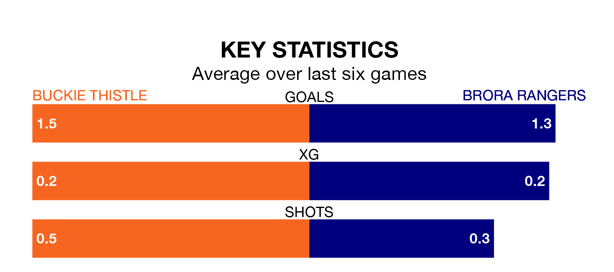

Two of the Highland Football League's meanest defences go head-to-head at Victoria Park on Wednesday, when Buckie Thistle host Brora Rangers.
Only two sides – Brechin City and Banks O' Dee – have conceded fewer goals than Buckie Thistle to date: the home side have let in just 32 goals in 29 games.
Brora have conceded 36 goals in 28 games, giving them the joint-fourth tightest back line so far this season.
In the last 10 years, Buckie Thistle and Brora have played each other on 13 occasions. Buckie Thistle won four of them, Brora seven, and they drew twice.
On average, Buckie Thistle scored 1.7 goals and Brora 3.0 in those matches.
Their last meeting was on February 14, when Buckie Thistle won 5-1 away.
Buckie Thistle are fourth in the table after 29 games, of which they have won 21 and drawn three, earning 66 points.
Brora are two places behind the hosts in sixth, with 15 wins and eight draws putting them on 53 points.
Buckie Thistle are in reasonable form in the Highland Football League, with three wins and two draws from their last six games.
With three wins and a draw over that period, Rangers's form is slightly worse – they have taken 10 points from 18, compared to Buckie Thistle's 11.
Buckie Thistle's last match was on Monday, a 3-0 win against Keith.
Brora drew 3-3 with Deveronvale last time out, on April 3.
Updated: 11:20 (UTC), 09/04/24